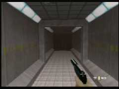
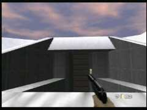
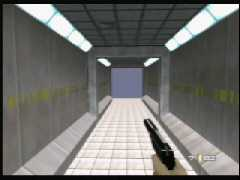
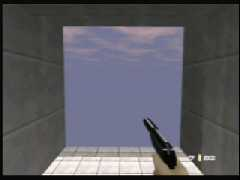

8002BED0 FFFF
Avec des Codes, on peut couper les Cinématiques de Fin de Niveau. Ce n'est réellement intéressant que pour le Barrage et Surface. Ce qui se passe, c'est que lorsque la Cinématique doit s'enclencher, vous resterez bloqué, mais aurez le privilège de voir des choses qu'on n'est pas censé voir !
- Barrage : lorsque l'on tombe du Barrage, on arrive à l'entrée de Facility ! Normalement, elle est presque impossible à voir même avec le Sniper depuis l'endroit où l'on saute d'habitude. C'est une vue qu'on n'a pas l'habitude d'avoir hein ?


- Surface 1 : l'entrée du Bunker. On tombe, on atterrit sur la Grille qui vient juste de sauter, puis on est bloqué, à genoux. On ne peut rien faire pour se dégager...


- Surface 2 : l'entrée du Bunker. C'est assez rigolo, car en fait, Rare a tout prévu. Même si on arrive au bout, on est bloqué par la Porte-Vitre, mais en plus elle est opaque ! Pourquoi Rare ne veut-il pas que l'on voie derrière ?
- Voilà pourquoi : parce qu'il n'y a rien ! Et c'est assez logique en fait. Ca aurait bouffé trop de mémoire de mettre le Bunker ET Surface sur le même Espace. Ca aurait ramé comme jamais. Il reste de cette Histoire que c'est marrant de se retrouver au bord du néant, même si on ne peut pas tomber...










